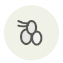

Pignon pinyon
Pinyon pine nut
| Nom latin | Pinus edulis |
|---|---|
| Famille | Noix & graines |
| Origine | Sud-ouest américain |
| Saison | septembre – novembre |
| Goût | Résineux · Sucré · Boisé |
| Prix courant | 80–150 €/kg |
Ce que c’est
Le pinyon est l’arbre emblème du Nouveau-Mexique depuis 1949, et ses pignons se ramassent encore à la main, à terre, sous des arbres sauvages — aucun verger, aucun moyen de hâter une récolte. L’arbre fructifie par à-coups : une bonne année remplit tous les étals du bord des routes, les suivantes ne donnent presque rien.
En cuisine
La coque est assez fine pour se casser entre les dents : faites-les griller en coque, dix minutes à 165 °C, et décortiquez au fur et à mesure. C’est le pignon le plus gras du commerce et le premier à rancir ; achetez petit et congelez le reste.
S’accorde avec
Maïs bleu Maïs Sauge Baie de genièvre Agneau Miel Piment
Même espèce
Pignon de pin de Corée Pignon de pin Huile de pignon de pin
De saison en même temps
Camarine noire Noisette de Cervione Ginseng frais Jujube Lagopède Matsutaké
Une erreur ici, ou un oubli ? Dites-le nous